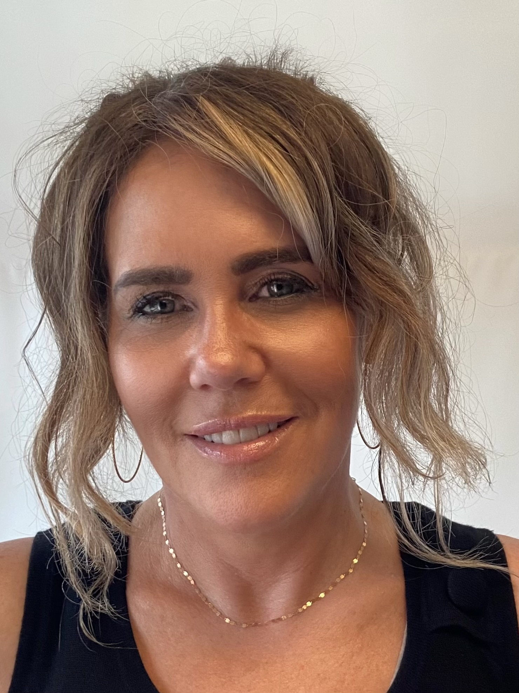
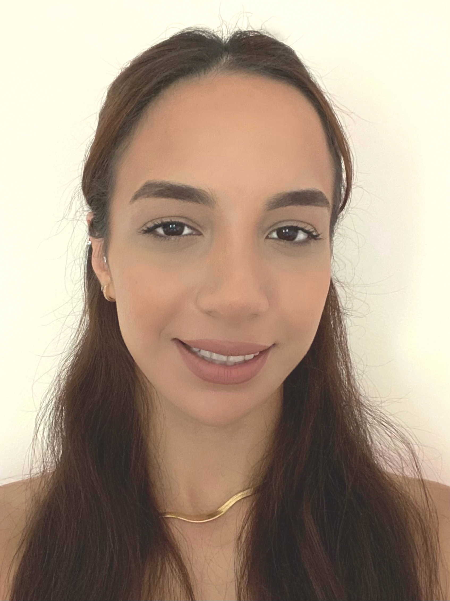
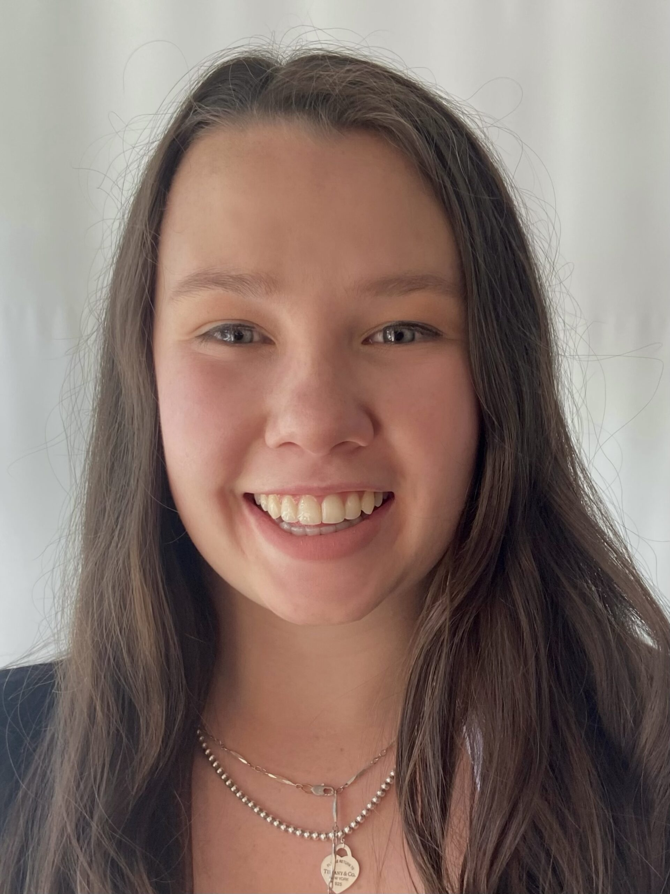
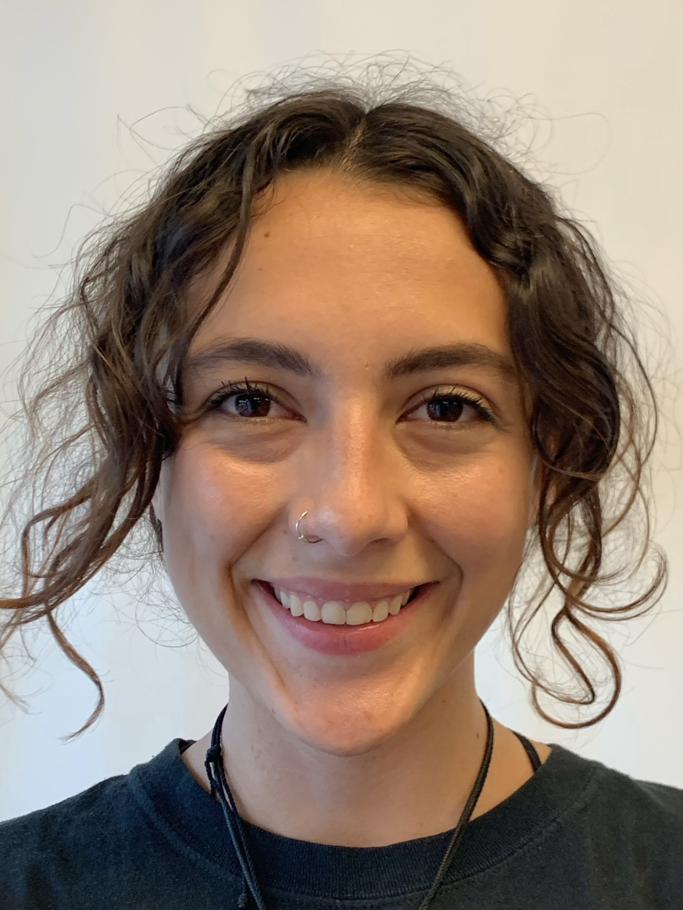

About Us
Coaching Team
Certified coaches who are passionate about every child’s development
Our team of professionally trained gymnastics coaches are ready to bring out the best in your child. All our staff have a shared commitment to fostering the development of the complete child. Our company is not just about gymnastics - it's about the balance of mind and body and creating the foundation for confidence and personal success.

Paula Johnson
Owner / Head Coach
In 1995 Paula opened the Academy of Sport and Fitness with a philosophy that all gymnasts should have access to high level coaching and their expertise, no matter what level they aim to achieve. She has maintained this philosophy for over 25 years and runs quality programs focused on personal achievement.
Paula is a fully certified NCCP Level 4 Master Coach and also has a background in sport psychology and certificates in fitness training.
Paula is a former elite gymnast who started her career coaching at the prestigious Seneca College Elite Training Center for Olympic hopefuls in gymnastics, figure skating and tennis.
She has produced many Provincial and National Champions as well as athletes who have proudly represented Canada at the Olympic Games, World Championships, Commonwealth Games and Pan Am Games, to name a few.

Yasmin Salem
Coaching Development & Assistant Head Coach
Yasmin has been coaching at the Academy for 7 years. She did rhythmic and artistic gymnastics growing up which sparked her passion for the sport. She is a full time coach currently studying at Ryerson University. Yasmin brings her knowledge and passion to each child and all our up and coming young coaches.

Quinn McKenney
Recreational Program Development & Competitive Coach
Quinn has been coaching at the Academy for 10 years. She is a former competitive gymnast and Provincial Champion and has represented ASF internationally. Quinn has a BSc in Nutrition and Dietetics and a Masters in Public Health from University of Toronto. Her favourite thing about coaching is seeing the athletes she works with gain confidence in both their gymnastics and themselves as people.

Alondra Arango
Recreational Supervisor & Pre-competitive Coach
Alondra has been coaching for 8 years. She is a former provincial competitive gymnast. Alondra has completed a degree in Children, Childhood and Youth Studies at York University and is currently finishing teacher's college. She has a caring approach to her coaching and has a soft spot for the youngest ones in the gym. Her passion for gymnastics led her to a career choice in teaching and continued dedication to the sport she loves.
All of our recreational and competitive coaches are certified under the N.C.C.P. (National Coaching Certification Program) for artistic gymnastics and trampoline. They are then required to apprentice with a Senior Staff member prior to receiving their own group. All of our coaches are qualified to teach and spot all gymnastics skills. We select people who have a passion for our sport and train them to use safe and progressive techniques.